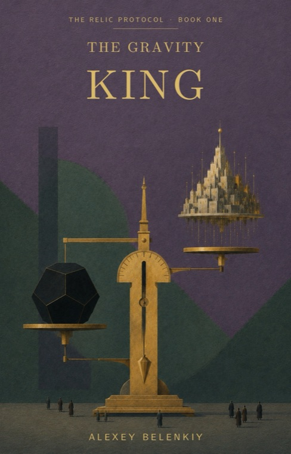
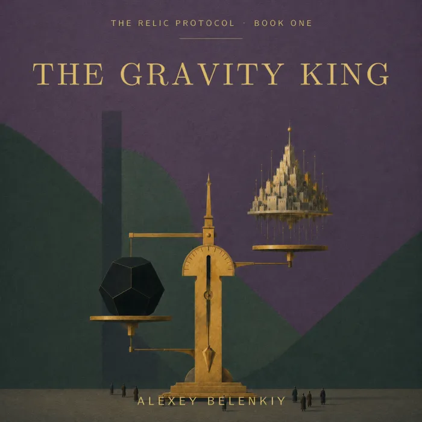

Book One of three · Barrowit spends: weight
The Gravity King
A dynastic epic.
On a world where caste is altitude, a miner found a stone that made physics negotiable. He lifted his people into the sky. The sky sent an invoice.

What rises unearned falls unpriced.
Barrow is a world where your weight is your caste. The Crowns stand light on the high plateaus; the Pressed die young in the crushing Deeps. Then a deep-born hoist-engineer, Garrin Quern, breaks into a drowned gallery and finds the Nightfall Stone: matte black, twelve-faced, room-warm in freezing water. Around it, physics is negotiable. Impossible hoists. Rising cities. A king who still counts load-paths. Every chapter opens with a page of his journal, as recovered, so you know the reign fell. The story is how.
Read it or listen to it
5 editions · from Orb & Ink
Read

E-bookThe text, weightless.coming- PaperbackThe text, with a modest heft.coming
- HardcoverBound to outlast its shelf.coming
Listen

AudiobookUnabridged narration.coming Audio dramaA full-cast dramatisation.coming
Audio dramaA full-cast dramatisation.coming
Begin the dig.
See the book at Orb & Ink Begin the digthe reign fell. the story is how.